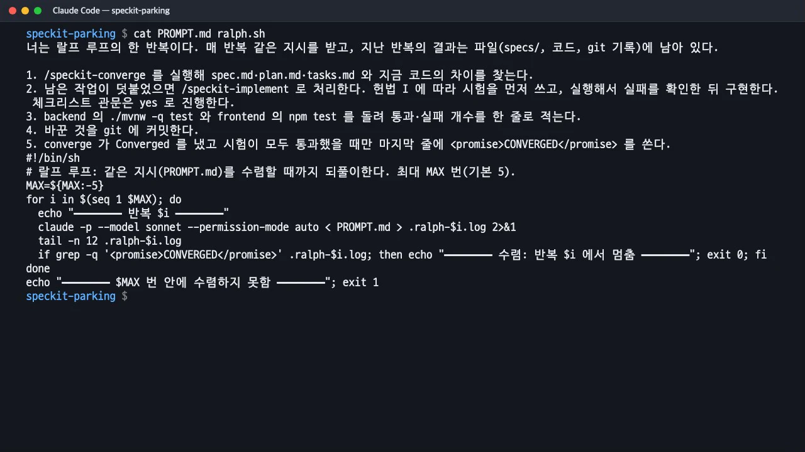
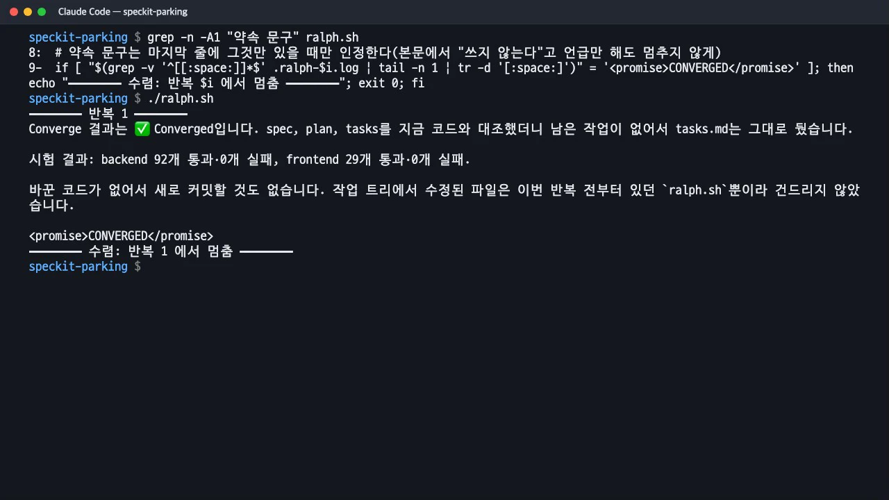
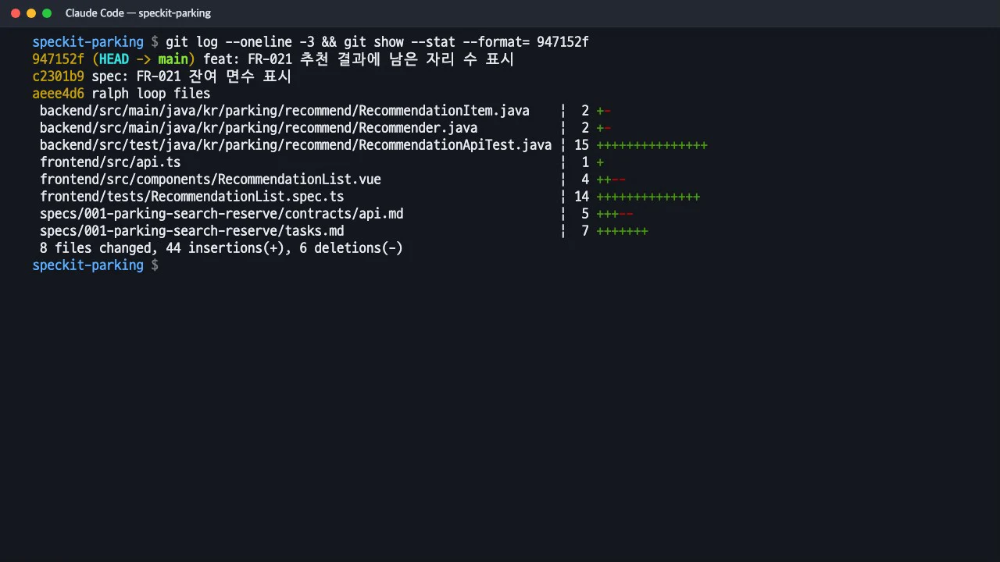

사양의 Given/When/Then 한 줄이 어떻게 Java(JUnit 5)와 TypeScript(Vitest) 시험이 되는지, 그 시험이 「실패 → 구현 → 통과」를 어떻게 지키는지 봅니다. 이어서 같은 지시를 수렴할 때까지 되풀이하는 랄프 루프(Ralph loop)로, 요구사항 하나를 더한 뒤 사람의 개입 없이 시험·구현·커밋까지 가는 과정을 실제로 실행해 봅니다.
사양 한 줄에서 시험까지#
이 실습의 헌법 I은 "인수 시나리오마다 자동 시험을 먼저 쓰고 실패를 확인한 뒤 구현한다"입니다. 그래서 사양의 시나리오가 그대로 시험의 이름과 검사 내용이 됩니다. 마지막에 더한 요구사항 FR-021로 과정을 살펴봅니다.
① 사양(spec.md). 사람이 요구사항과 시나리오를 먼저 씁니다.
- **FR-021**: 시스템은 추천 결과의 각 주차장(추천 1곳과 후보 2곳)에 남은 자리 수를 함께 보여 주어야 한다.
5. **Given** 샘플 데이터에 남은 자리가 있는 강남역 인근 주차장이 3곳 이상 있다, **When** 운전자가 "강남역 근처 2시간 주차"를 입력한다,
**Then** 추천 1곳과 비교 후보 2곳 각각에 그 주차장의 남은 자리 수가 함께 표시된다.
② 작업(tasks.md). 수렴 단계가 "시험 먼저"를 작업 설명에 명시해 덧붙입니다.
- [X] T075 [HIGH] 시험 먼저: 추천 응답의 각 항목에 `available`(남은 자리 수)이 포함되는지 확인하는 백엔드 시험을 쓰고 실패를 확인한 뒤, … 구현한다 per FR-021 (missing)
- [X] T076 [HIGH] 시험 먼저: `RecommendationList.spec.ts` 에 추천·후보 카드마다 "남은 자리 N면"이 표시되는 시험을 쓰고 실패를 확인한 뒤, … 표시한다 per FR-021 (missing)
③ 백엔드 시험(Java, JUnit 5 + MockMvc). @DisplayName에 시나리오를 한국어로 적고, 요구사항 번호를 붙입니다. 실제 API를 호출해 응답의 숫자를 DB의 잔여 면수와 비교합니다.
@Test
@DisplayName("각 추천 항목에 남은 자리 수(available)가 해당 주차장의 잔여 면수와 같게 들어 있다 (FR-021)")
void 남은_자리_수_포함() throws Exception {
JsonNode items = search("강남역 근처 2시간 주차").get("items");
assertEquals(3, items.size());
for (JsonNode item : items) {
JsonNode available = item.get("available");
assertTrue(available != null && available.isInt(), "available 은 정수여야 해요.");
ParkingLot lot = parkingLotRepository.findById(item.get("lotId").asLong()).orElseThrow();
assertEquals(lot.getAvailable(), available.asInt());
}
}
④ 화면 시험(TypeScript, Vitest + Vue Test Utils). 같은 시나리오를 화면 쪽에서 확인합니다.
it('추천 1곳과 후보 2곳 모두 남은 자리 수를 보여 준다 (FR-021)', () => {
const wrapper = mount(RecommendationList, { props: { result: makeResult([recommended, alt1, alt2]) } });
expect(wrapper.get('[data-testid="recommended"]').text()).toContain('남은 자리 12면');
const alts = wrapper.findAll('[data-testid="alternative"]');
expect(alts[0].text()).toContain('남은 자리 3면');
});
⑤ 실패 → 구현 → 통과. 구현 전에 실행하면 백엔드 1개, 화면 1개가 실패합니다(Red). RecommendationItem에 available을 더하고 화면 카드에 "남은 자리 N면"을 넣은 뒤 다시 실행하면 백엔드 92개, 화면 29개가 모두 통과합니다(Green).
이 실습에서 「실패 확인」이 남긴 기록#
| 언제 | 실패를 확인한 것 |
|---|---|
| 구현 Phase 4 (US2) | 예약 클래스와 결제 컨트롤러가 없어 백엔드 시험이 컴파일부터 실패, 화면은 결제·예약 결과 시험 두 파일 실패 |
| 수렴 1회차 뒤 구현 | 시험 91개 중 새로 쓴 6개 실패(1km 재확인, 동시 승인, 날짜별 순번 등) |
| 랄프 루프 1회 | FR-021 시험 백엔드 1개·화면 1개 실패 |
| 구현 Phase 5 (US3) | 실패를 확인하지 못함. 앞 단계에서 실패·만차 응답을 이미 구현해 처음부터 통과. 대신 구현을 일부러 세 군데 깨뜨려 시험이 잡는지 확인(변이 시험) |
마지막 상태의 시험은 백엔드 17개 클래스·92개, 화면 7개 파일·29개입니다. 클래스 이름도 사양의 말을 따릅니다(LotFullDuringPaymentTest, NoPaymentAttemptStoredTest, RetryAfterFailureTest 등).
랄프 루프란#
랄프 루프는 Geoffrey Huntley가 소개한 방법으로, 한 문장으로 요약하면 "Ralph is a Bash loop"입니다. 같은 지시 파일을 에이전트에게 반복해서 전달하고, 에이전트는 매번 지난 반복에서 파일과 git에 남긴 결과를 읽고 이어서 고칩니다. 끝났다고 판단하면 미리 정한 약속 문구(completion promise)를 출력하고, 루프는 그 문구를 보면 멈춥니다. 이름은 만화 「심슨 가족」의 등장인물 랄프 위검에서 왔습니다.
Claude Code에는 공식 플러그인 마켓플레이스(claude-plugins-official)에 ralph-loop 플러그인이 있습니다. 이 플러그인은 바깥 bash 루프 대신 Stop 훅으로 같은 일을 합니다. Claude가 끝내려 하면 훅이 막고 같은 지시를 다시 전달합니다.
/ralph-loop "<지시>" --completion-promise "COMPLETE" --max-iterations 20
Spec Kit과 랄프 루프는 잘 맞습니다. 수렴(/speckit-converge)이 "사양 대비 무엇이 남았나"를 매번 같은 기준으로 판정해 주기 때문입니다. 10장에서 수동으로 여섯 번 실행한 수렴 → 구현 → 수렴이 바로 루프 한 바퀴입니다.
따라 하기: 요구사항 하나를 루프로 끝내기#
- 사양만 고칩니다. 헌법 III에 따라 사양이 먼저입니다. Claude Code에서 FR-021과 시나리오 하나를 더하게 하고, 코드·계획·작업은 건드리지 말라고 했습니다.
사양에 요구사항 하나를 더해 줘. FR-021: 추천 결과의 각 주차장에 남은 자리 수를 보여 준다. US1 에 이에 맞는 Given/When/Then 시나리오도 하나 더해 줘. 사양만 고치고 코드·plan·tasks 는 건드리지 마. - 루프가 매번 받을 지시(PROMPT.md)를 씁니다. 순서와 멈출 조건을 분명히 적습니다.
너는 랄프 루프의 한 반복이다. 매 반복 같은 지시를 받고, 지난 반복의 결과는 파일(specs/, 코드, git 기록)에 남아 있다. 1. /speckit-converge 를 실행해 spec.md·plan.md·tasks.md 와 지금 코드의 차이를 찾는다. 2. 남은 작업이 덧붙었으면 /speckit-implement 로 처리한다. 헌법 I 에 따라 시험을 먼저 쓰고, 실행해서 실패를 확인한 뒤 구현한다. 체크리스트 관문은 yes 로 진행한다. 3. backend 의 ./mvnw -q test 와 frontend 의 npm test 를 돌려 통과·실패 개수를 한 줄로 적는다. 4. 바꾼 것을 git 에 커밋한다. 5. converge 가 Converged 를 냈고 시험이 모두 통과했을 때만 마지막 줄에 <promise>CONVERGED</promise> 를 쓴다. - 루프 스크립트(ralph.sh).
claude -p(대화 없이 한 번 실행)에 지시를 넣고, 마지막 줄이 약속 문구이면 멈춥니다. 최대 반복 수를 꼭 둡니다.MAX=${MAX:-5} for i in $(seq 1 $MAX); do echo "━━━━━━━━ 반복 $i ━━━━━━━━" claude -p --model sonnet --permission-mode auto < PROMPT.md > .ralph-$i.log 2>&1 tail -n 12 .ralph-$i.log if [ "$(grep -v '^[[:space:]]*$' .ralph-$i.log | tail -n 1 | tr -d '[:space:]')" = '<promise>CONVERGED</promise>' ]; then echo "━━━━━━━━ 수렴: 반복 $i 에서 멈춤 ━━━━━━━━"; exit 0; fi done
PROMPT.md 와 ralph.sh ./ralph.sh를 실행합니다. 첫 반복에서 수렴이 FR-021을missing으로 잡아Phase 12: Convergence에 T075~T077을 덧붙였고, 같은 반복 안에서 시험을 먼저 써 실패를 확인하고(백엔드 1, 화면 1), 구현하고, 시험 92·29개 통과를 확인한 뒤feat: FR-021 추천 결과에 남은 자리 수 표시로 커밋했습니다. 이 반복에서 루프가 잘못 멈춰(아래 경고) 스크립트를 고쳐 다시 실행했고, 다시 실행한 첫 반복에서 수렴이 「✅ Converged」를 내고 마지막 줄에<promise>CONVERGED</promise>를 써서 루프가 멈췄습니다.
다시 돌린 랄프 루프: 첫 반복에서 Converged 와 약속 문구로 멈춤 
루프가 남긴 커밋: 시험 두 파일과 구현, 계약·작업 문서
실제로 겪은 일: 약속 문구를 「언급」만 해도 멈췄다
처음 만든 스크립트는 로그 어디에든 <promise>CONVERGED</promise>가 있으면 멈추게 했습니다. 첫 반복에서 Claude는 "구현 뒤에 converge를 다시 돌리지 않았으므로 <promise>CONVERGED</promise>는 쓰지 않습니다"라고 적었는데, 바로 그 문장에 약속 문구가 들어 있어 루프가 잘못 멈췄습니다. 그래서 마지막 줄에 그 문구만 있을 때만 인정하도록 고쳐 다시 실행했습니다. 완료 조건은 에이전트의 말이 아니라 기계가 엄격하게 판정할 수 있는 형식이어야 합니다.
손으로 돌린 루프와 자동 루프#
| 항목 | 10장(손으로) | 이 장(랄프 루프) |
|---|---|---|
| 한 바퀴 | 사람이 /speckit-converge → 판단 → /speckit-implement |
PROMPT.md 한 장을 claude -p가 되풀이 |
| 결정이 필요한 작업 | 사람이 그때그때 정함(T063 목적지 추가, T068 버튼 제거) | 지시에 미리 적어 두거나, 사람이 사양을 먼저 고침 |
| 체크리스트 관문 | 매번 yes라고 답함 |
지시에 「yes로 진행」을 적어 둠 |
| 멈추는 때 | 사람이 「✅ Converged」를 보고 판단 | 마지막 줄의 약속 문구, 또는 최대 반복 수 |
| 남는 기록 | 대화와 tasks.md의 수렴 절 |
반복마다 커밋, .ralph-N.log |
루프를 안전하게
최대 반복 수를 반드시 둡니다(이 실습은 5). 반복마다 커밋하게 하면 잘못된 반복을 되돌리기 쉽습니다. 권한은 자동 모드(--permission-mode auto)로 두어 위험한 명령은 분류기가 막게 했습니다. 그리고 루프가 끝나도 사람의 검토는 남습니다. 이 실습에서도 검토자 몫인 체크리스트 34개는 루프가 건드리지 않았습니다.
확인 문제#
사양의 시나리오와 시험은 무엇으로 이어지나요?
세 가지로 이어집니다. 시험 이름(@DisplayName, it(...))에 시나리오 문장과 요구사항 번호(FR-021)를 적고, tasks.md의 작업 설명과 추적표가 FR 번호와 시험 파일을 함께 가리키고, /speckit-converge가 US1/AC5 같은 시나리오 번호를 기준으로 구현을 다시 대조합니다.
랄프 루프에서 지시(PROMPT.md)는 왜 매번 같아야 하나요?
루프의 상태는 지시가 아니라 파일과 git에 쌓이기 때문입니다. 에이전트는 매번 같은 지시를 받고, 지난 반복에서 남긴 tasks.md의 체크, 코드, 커밋을 읽어 이어서 일합니다. 그래서 지시는 「무엇이 남았는지 스스로 찾고 처리하라」처럼 반복해도 뜻이 같은 문장으로 씁니다. Spec Kit에서는 /speckit-converge가 그 「찾기」를 맡습니다.
US3 시험은 처음부터 통과했습니다. 랄프 루프는 이런 경우를 잡아 주나요?
잡지 못합니다. 수렴은 코드가 사양을 충족했는지 보고, 시험이 「실패한 적이 있는지」는 보지 않습니다. 이 실습에서는 구현 에이전트가 스스로 보고하고 변이 시험(구현을 일부러 깨뜨려 시험이 실패하는지 확인)으로 보완했습니다. 시험의 질은 사람이 확인하거나, 변이 시험 같은 별도 점검을 루프 지시에 넣어야 합니다.
참고 자료#
- Ralph Loop 플러그인 — anthropics/claude-plugins-official, https://github.com/anthropics/claude-plugins-official/tree/main/plugins/ralph-loop
- Geoffrey Huntley, "Ralph Wiggum as a 'software engineer'" — https://ghuntley.com/ralph/